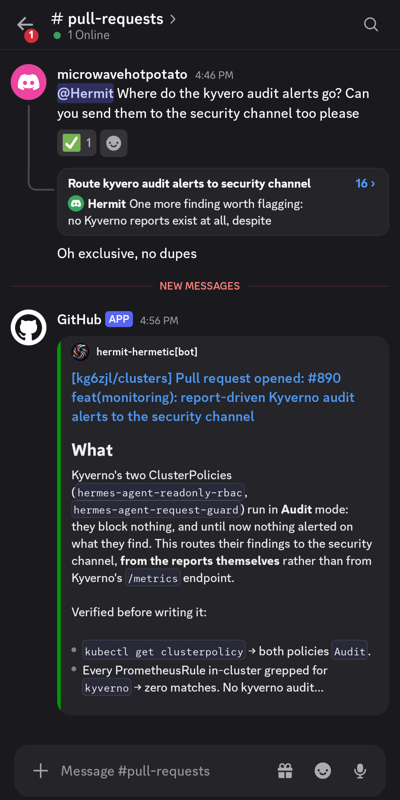

Why bother
Two versions of this are easy and neither is useful. An agent that can only look is safe and pointless. An agent that can apply and delete is useful and one bad guess from a disaster I clean up at 1am.
So I split reach from authority. It gets every workload, log, event and metric for reading. It gets zero authority to mutate. Anything not in a merged commit is reverted on the next Flux reconcile, so a bad idea costs a rejected pull request, not an outage.

Reviewing every change is nowhere near the tax I thought it would be, and it leaves a written record of every change anything made — including me.
What it has actually done
- Deleted alerts that could not fire. Rules watching metrics that don't exist. It measured each against real data before shipping, and cut the decoration.
- Cut a paging alert for a weekly event. Reboots aren't incidents here. The signal moved to a dashboard.
- Found the hole in its own allow-list. Two API-server clients share a generic base image, so image matching would have exempted everything built on it. It matched namespace and pod instead.
- Turned two policies from reports into refusals. The guard on the agent's own identity now refuses violations instead of writing them to an unread audit.
- Built the dashboard I actually wanted. The question was "why is this node unstable". Pressure stall and per-disk latency answered it: one reboot, not a sick node.
What it costs
Every wake spends real money, and the number moves with the models, so quoting one here would measure a month that has already changed. Alert-driven wakes were the dominant cost at the start. The fix was narrower filters, not switching the feedback path off: an hourly poll, a short allow-list of alerts worth an unattended run, a dedupe gate, and a hard ceiling on runs.
The number that scared me was the whole provider account for a day. The agent's share was a fraction of it. Read what a cost figure measures before rebuilding anything.
What's weak right now
- One policy is fail-open on purpose. The guard that refuses exec, token minting and Secret writes doesn't run if Kyverno is down. Failing closed would block every Secret write in the cluster, and RBAC already covers the same ground.
- Scan triage is behind the findings. The scanner works. Working through what it found is the problem.
- The registry is open inside the cluster. Fine while everything in it is a public base image or a build output. Not fine the day that stops being true.
Read on
Guardrails is the leash: permissions, secrets, networking, and the policies that stop the agent widening its own rights. Monitoring is what's measured and why the list is short. Alerting is the pipeline and the decisions that keep it quiet. The loop is how a change gets in. The stack is every tool and why that one.
What others said
A serious, adult implementation of constrained AI ops. Not revolutionary — GitOps plus least privilege plus a human gate is the correct pattern — but executed with unusual care and honesty about what still sucks.
Broad read access, zero write authority, and every change routed through a Flux-reconciled pull request. The "what's weak right now" section is what sold it.